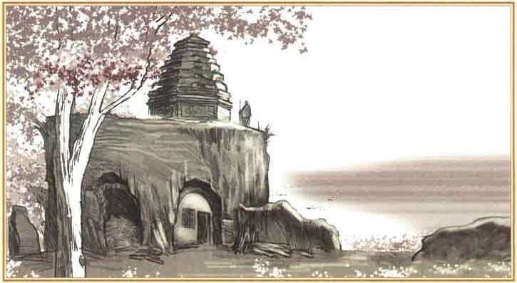
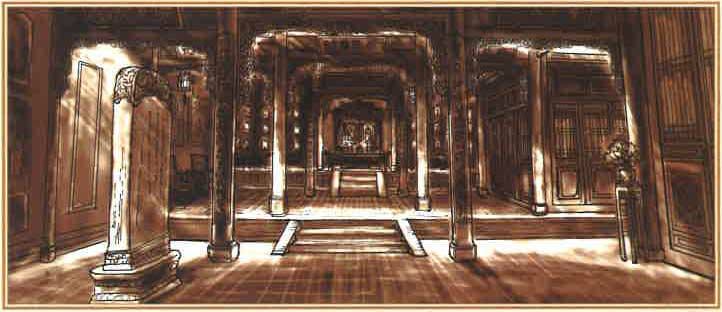

白孝文从一开始就被他的父亲白嘉轩当作族长被培养，自然是管教严格。与伙伴们玩耍都叫的是官名，而非是小名。
在他16岁的时候，家中急需要人，娶了一房大他3岁的妻子。在前2次新婚之夜，他完全没有性的观念，夜晚一直挑灯看书，直至深夜入睡。
在妻子的引导下，他日日夜夜都要与妻子交欢。父亲得知后，严厉的教导了他，这件事才算结束。
期间，奶奶有劝诫过他和他妻子，完全不顶用。从这是否可以看出，孝文虽被管教严格，却经不起引诱，为后面他和田小娥偷情的剧情埋下了伏笔。
在一点一点父亲的指引下，有了族长的样子，族长的威严。鹿子霖出于想看白家笑话的目的，想要田小娥引诱孝文。在这之前，田小娥已经因和其他男子偷情，而被孝文以族规惩罚过。
在一次秋收宴会中，小娥在人群中拽住了孝文的命根，将他拉到荒地上，亲吻了孝文。孝文由惊慌逐渐无法控制自己，在要与小娥发生关系时，射在了外面，无法进入小娥身体。
之后，父亲因家里来了土匪，被打弯了腰，自己的孩子也降生于世。他再也忘不掉与小娥的那一晚，便去窑洞中与小娥偷欢。在没被发现之前，他每次都不能进入小娥体内。因为还要“脸面”
当终于被父亲发现后，被废除了族长职务，对其实施族规后，顺理成章的与小娥生活在一起了。
也终于得到了全部的小娥，没有脸面之后，也就没有什么可顾及的了。
因为被发现偷欢，羞了先人的脸，而被分了家产。在饥荒年中，因为父亲不接济自己粮食，而最终与其撕破脸。不得已将田地一点一点的卖给鹿子霖。
然后将卖来的钱全部送到小娥手中。过年时，在一次与小娥偷欢的过程中，小娥送给孝文一杆鸦片。这也使得他最终将8亩田地和房屋全部卖给鹿子霖，当他的妻子询问他，卖地得的钱时，他百般推辞一分都没拿回家里。
这也使得他的妻子和孩子沦落街头，找白嘉轩讨饭吃。在与白嘉轩倾诉苦水后，最终饿死。
孝文也因为家财败尽而四处讨饭，野狗在死人坑中等待着孝文咽气。因听见在发赈灾粮而爬到那里，在鹿子霖的介绍下经过努力反而让其当了官，升至营长。
重新与白嘉轩恢复了父子关系，又从鹿子霖家卖回了房屋。解放后，当上了县长，虽然有踩着黑娃兄弟的尸体上位的嫌疑(赵匡胤行为)。
鹿兆海,鹿子霖的二儿子，小时候曾在白鹿原旧学堂与孝文、孝武、黑娃和兆鹏一起读书,后来又去城里读了新式学堂。
从小与白灵是青梅竹马，长大一起去城里念了新式学堂。在北伐战争中，曾与白灵一起搬运死人尸体，两人心生好感。
第一次国共合作，私定终生。用硬币互猜正反，兆海加入共产党，去了保定军校，白灵加入国民党。
因为兆海看到了黑娃、小娥和兆鹏在白鹿原上混乱的农协管理，给村中很多了人留下阴影，也带来痛苦，所以加入了国民党。
白灵也看到国民党政变后，将曾经的友党填入枯井，认为注定不是一个正确的党应该做的事，而加入共产党。
白灵曾多次被人求婚，却心念兆海委婉拒绝。
在他们再见面时，欣喜的告诉对方自己加入了对方的党派，终于可以在一起了，从而发现他们再次错过了彼此。因为党派观念不合，他们没能在一起，但都心念着对方，其他对方能放弃党派。
他们彼此约定，在分开的几年后，会让对方看见究竟哪个党才是正确的党。在这分开的几年中，一个不嫁，一个不娶。
而白灵因为对鹿兆鹏所秉承的共产党观念而喜欢上了他，生有一子。兆鹏知道弟弟与白灵的感情，但也没能克制住自己对白灵的喜爱。
在一次他们煽动学生爱国运动中遭到了封城围捕，兆鹏找到了兆海，说是帮嫂子出城去乡下做月子。兆海轻快又俏皮的答应了下来，兆海能看出来哥哥对白灵的喜欢，
但他想哥哥这次已经结婚了，自己和白灵就没有人阻碍了。可结局是那个嫂子就是白灵，出城后，兆海在白灵同意后吻了白灵的脸颊，放走了身为共产党的白灵。
并再次承诺，非她终身不娶。
白灵回到组织后，因为高级特务导致队伍疑心四起，因领导者陷入严重左倾错误，而最终导致白灵被活埋。
而兆海去潼关与日本作战，杀死43名日本士兵，成功阻挡日本人进入西安。后被蒋介石安排剿共，牺牲在其枪下。
在旅途中，遇见以为酷似白灵的女子，与其结婚后，送给她很多钱便离开了。
之后的几年，女子带着娃娃找到了鹿子霖，将其留给公公，自己改嫁。
小娥先后和四个男性发生过性关系，而且没有负罪感。可能那个时代的女性地位低下，而且小娥来到原上本来就不被大家所待见，只能依靠男人而活着。她知道别人来找她是喜欢她的身体，但给第一位老爷用尿泡过红枣，尿过鹿子霖一脸，也说明小娥不是那种卑微屈膝的人。
她也清楚哪种男人不能惹，那种男人靠得住。曾经有个游手好闲的人，在她窑上唱黄歌，学狼叫吓唬她，她都没有答应他。
孝文和黑娃是她能依靠的人，老爷和鹿子霖是她不敢招惹的人(在没有新靠山之前)。

